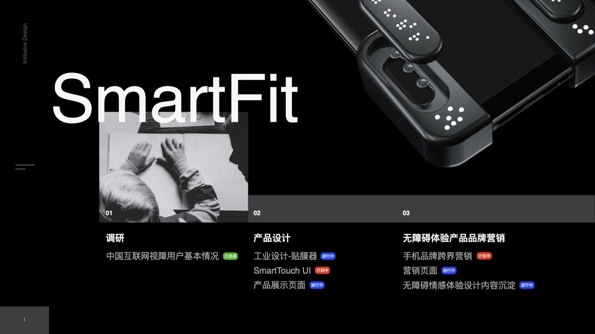
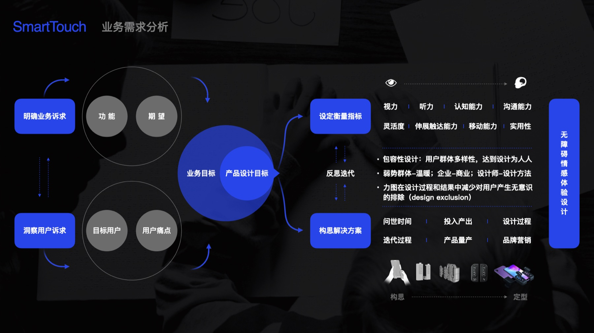
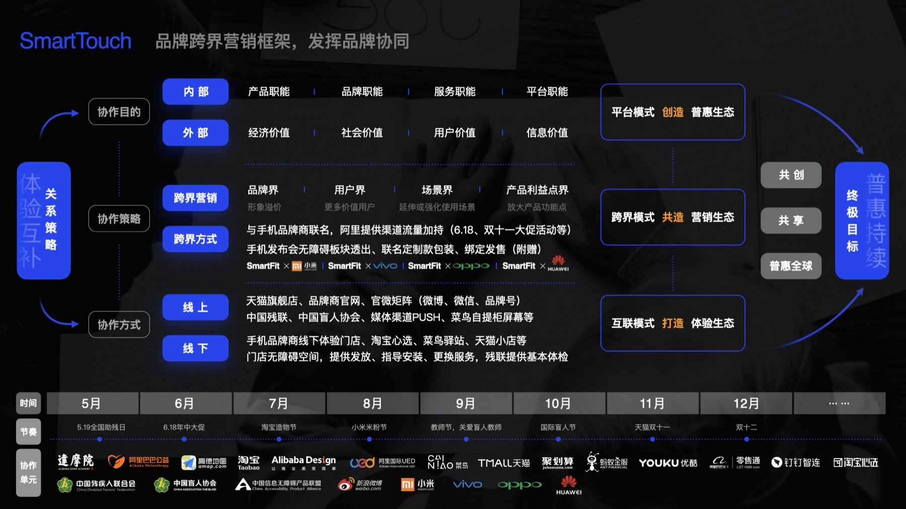
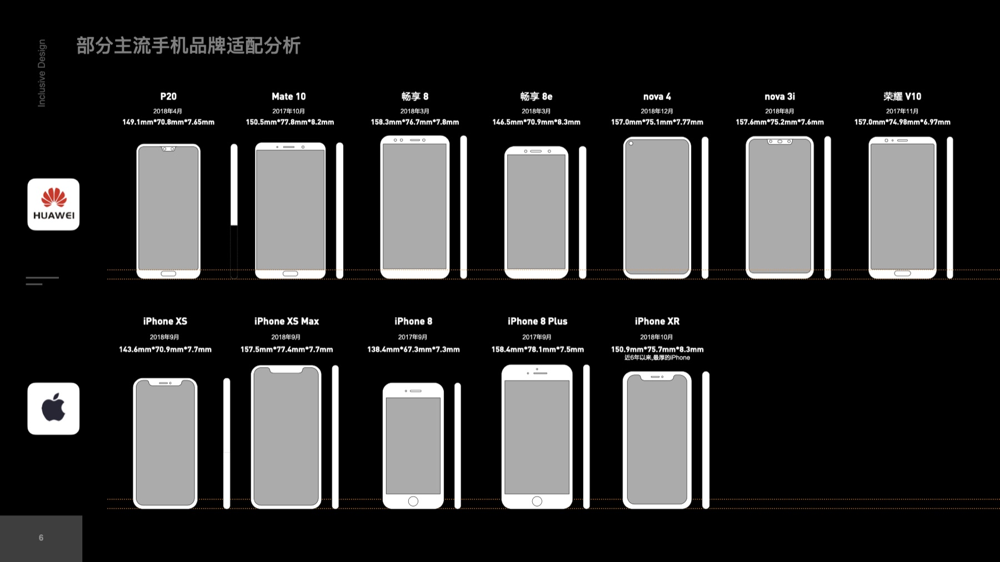
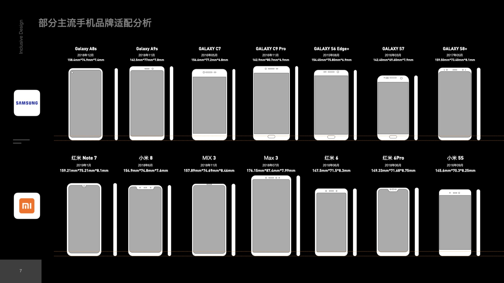
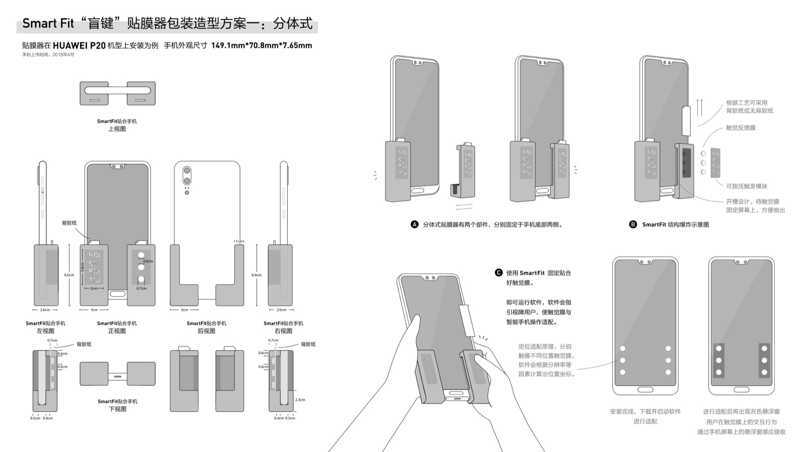
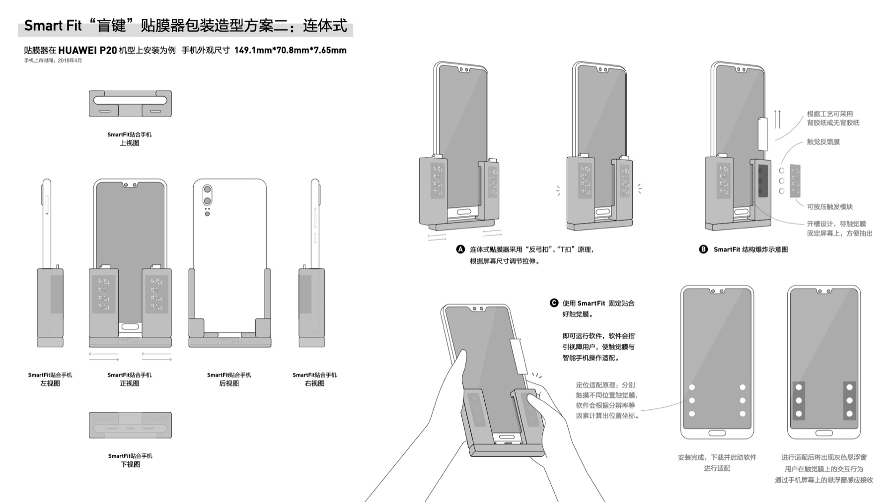
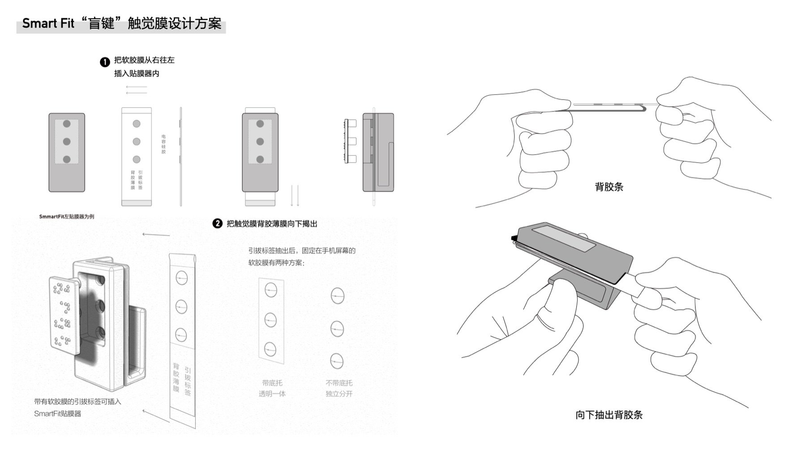
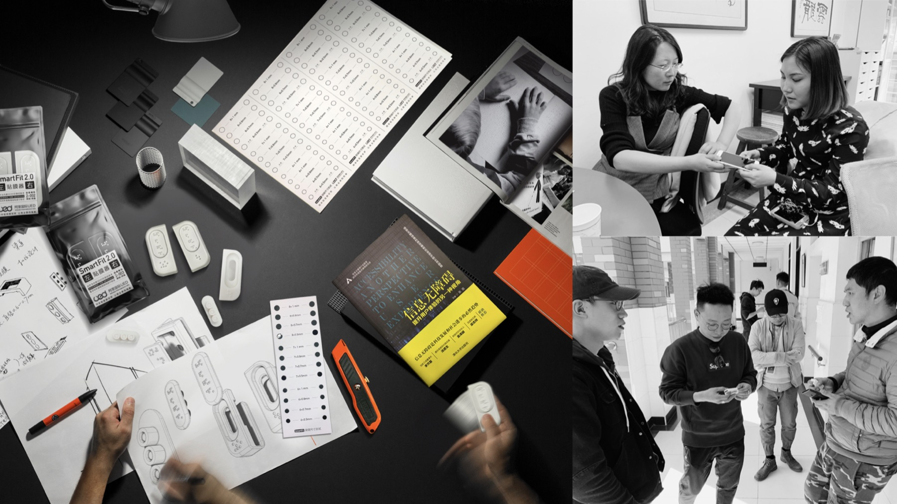
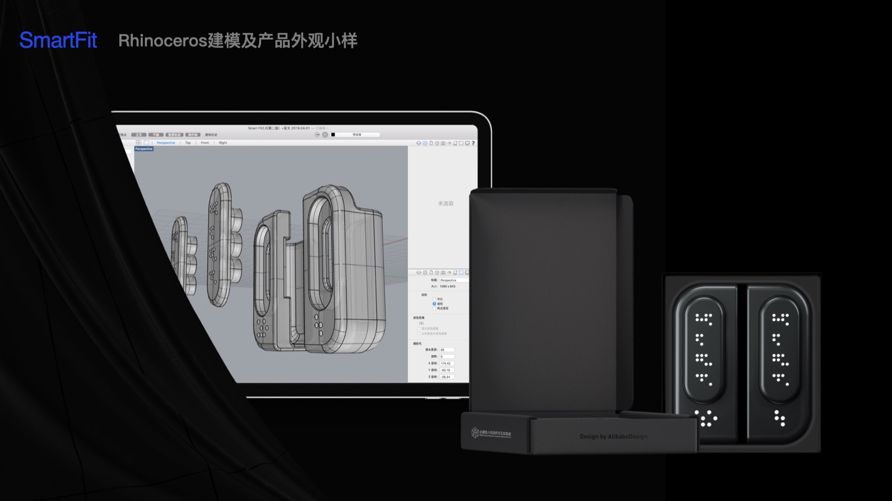

Social Innovation Product / smart FIT
把辅助科技，设计成可以日常佩戴的产品体验。
smart FIT 面向视障人群的日常出行与信息获取需求。项目的核心不是把功能简单装进硬件，而是让辅助产品摆脱“医疗器械感”，以更克制、更友好、更可信的方式进入真实生活。
01 / Product Judgment
社会价值驱动的产品，更需要被认真设计，而不是只被善意解释。
视障辅助产品天然带有强功能属性，但如果视觉表达过于工具化、医疗化，反而会拉开用户与产品之间的距离。smart FIT 的设计判断，是把“辅助”转译成“日常可穿戴”的产品语言。
项目围绕用户场景、硬件形态、交互反馈和品牌表达展开，把产品从技术原型推进到更完整的体验系统。
01
尊严感
避免把用户推向“被照顾”的单一叙事，让产品拥有平等、克制的设计表达。
02
可靠感
通过清晰的结构、材质和界面反馈，建立辅助产品所需的安全与信任。
03
日常感
让硬件、包装与传播更接近消费电子产品，而不是冰冷的功能设备。




02 / Industrial Design
把复杂功能压缩进更安静、更可信的产品形态。
产品需要在尺寸、佩戴、触摸、充电和识别之间取得平衡。设计过程围绕可握持、可感知、可维护的原则展开，用更简洁的外观降低辅助产品的心理负担。
从模型推演到结构细化，设计不断校准“技术可实现”和“用户愿意使用”之间的关系。




03 / Brand & Interface
品牌视觉、产品渲染和端侧界面共同构成完整体验。
smart FIT 的品牌表达不需要高声量装饰，而需要让用户和合作方理解：这是一款专业、可靠、日常可用的社会创新产品。因此视觉系统延续深色、蓝色和清晰信息层级，让产品显得精密但不疏离。
